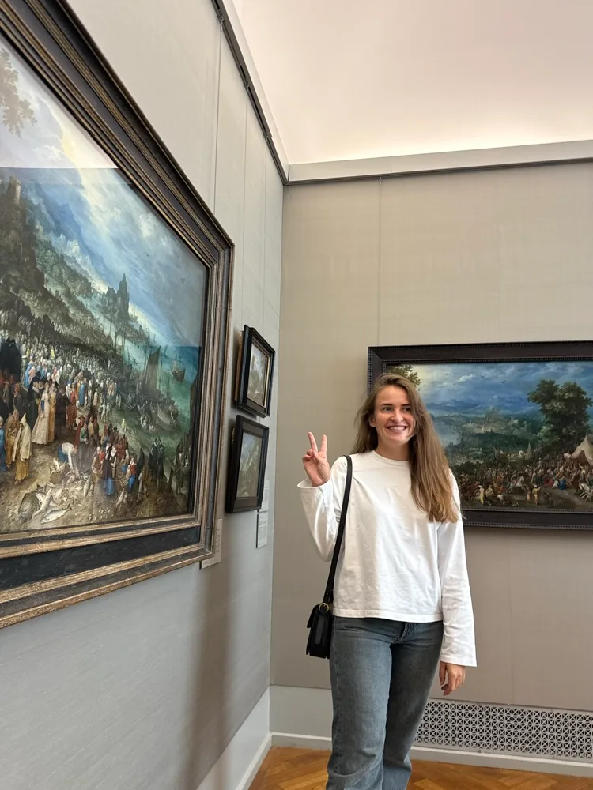
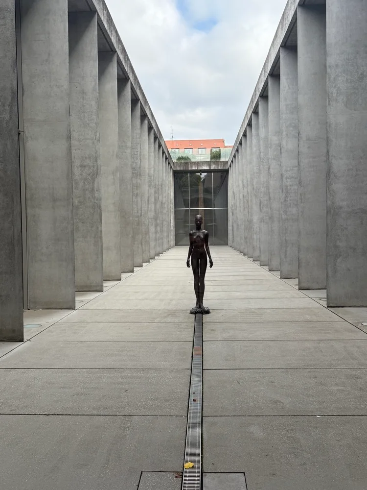
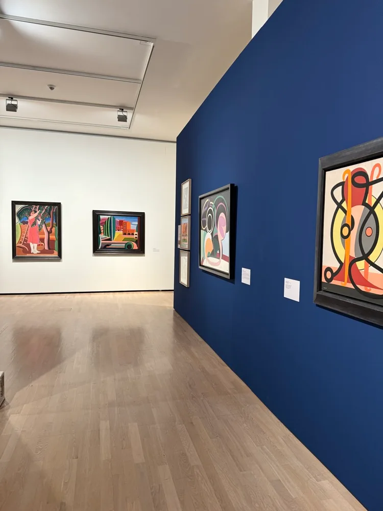
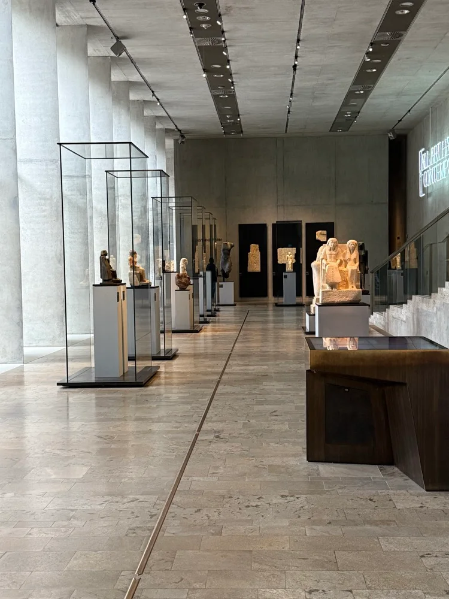

UX та структура
Дослідження задачі, аналіз конкурентів і зрозуміла організація контенту.

Привіт, я Юлія. Створюю дизайн вебсайтів
і застосунків з увагою до людей та деталей.
6 робіт · різні задачі та формати
Більше екранів і деталей процесу — у повних кейсах на Behance ↗
Я Юлія Паламарчук, UI/UX дизайнерка з Києва. На початку професійного шляху розвиваю навички через проєкти вебсайтів, платформ і мобільних застосунків.
Мені цікаво перетворювати ідеї на зрозумілі інтерфейси: продумувати структуру, вибудовувати візуальну ієрархію та знаходити рішення, які допомагають користувачеві рухатися до мети.



Дослідження задачі, аналіз конкурентів і зрозуміла організація контенту.
Лендинги, платформи та дашборди з послідовною візуальною мовою.
Екрани застосунків з увагою до навігації та ключових сценаріїв.
Шукаєте дизайнерку у свою команду або маєте ідею проєкту?
Написати в LinkedIn ↗